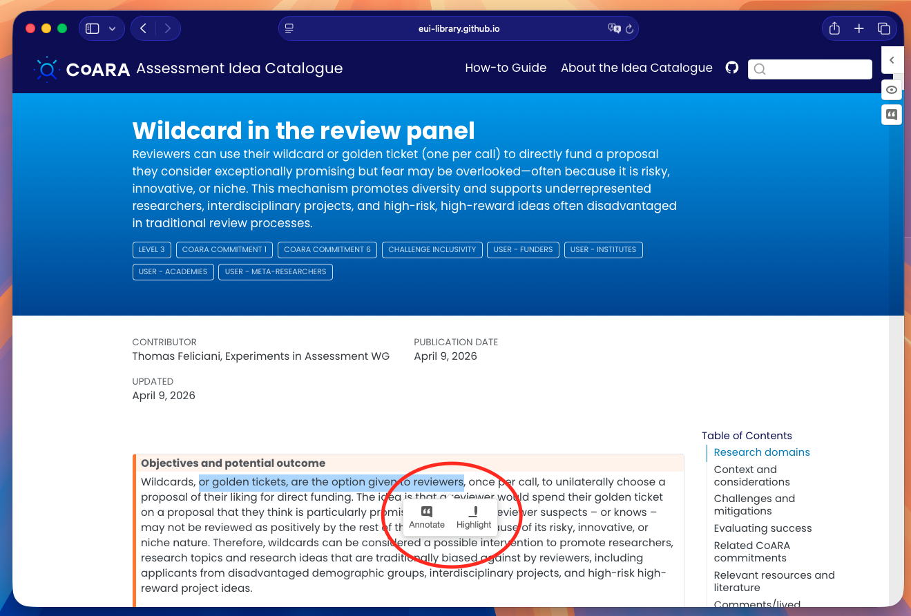
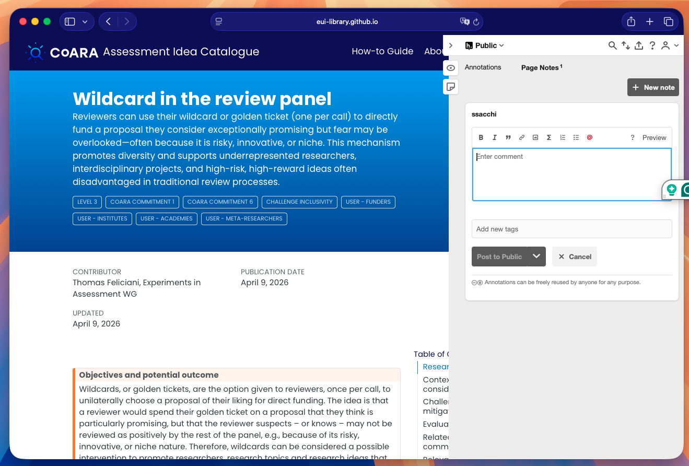

Annotating with Hypothesis on the CoARA Assessment Idea Catalogue
What is Hypothesis? Hypothesis is an open-source web annotation tool embedded directly in this site. It lets you highlight text, add comments, and share notes — publicly or within a group — without leaving the page.
You can use Hypothesis to add comments and feedback to all idea and other pages of the CoARA Assessment Idea Catalogue
2. Creating a free Hypothesis account
To annotate you need a (free) Hypothesis account.
- Click Sign up / Log in in the top-right corner of the sidebar.
- Choose Sign up and complete the registration form on hypothes.is.
- Return to the catalogue page — you will now be logged in automatically.
Tip: You can also log in with an existing Google account.
3. Adding an annotation (inline comment)
- Select any text on the page by clicking and dragging over it.
- A small toolbar appears above the selection with two buttons: Annotate and Highlight.

- Click Annotate to open the annotation editor in the sidebar.
- Type your comment in the text box. You can use Markdown for formatting (bold, lists, links, etc.).
- Optionally add tags to categorise your annotation.
- Choose the visibility:
- Public — visible to everyone with Hypothesis.
- Only me — private note.
- Group — visible only to members of a shared group (see §5).
- Click Post to Public (or the relevant group) to save.
The annotated text will appear highlighted in yellow on the page; clicking it reopens the annotation in the sidebar.
4. Adding a Page Note
A Page Note is a comment on the page as a whole, not anchored to specific text.
- Open the Hypothesis sidebar.
- Click the Page Notes tab.
- Click the pencil / new note button.
- Write your note and post it (same visibility options as annotations).

5. Highlighting without a comment
- Select some text.
- Click Highlight in the popup toolbar.
The text is highlighted in your personal view immediately. Highlights are private by default — they are visible only to you when logged in.
6. Replying to an existing annotation
- Open the sidebar (annotations from others appear listed automatically when you load the page).
- Click any annotation to expand it.
- Click Reply below the annotation text.
- Type your response and post it.
7. Annotation groups
If you are working collaboratively, you can create or join a Hypothesis group to share annotations only with your team:
- Click the group selector at the top of the sidebar (it shows Public by default).
- Choose New private group or paste an invite link shared by a colleague.
- All future annotations posted to this group will be visible only to members.
Quick reference
| Task | How |
|---|---|
| Open sidebar | Click the › arrow or the icons on the right edge |
| Log in | Click Sign up / Log in in the sidebar header |
| Annotate text | Select text → Annotate → write comment → Post |
| Highlight text | Select text → Highlight |
| Add a page note | Page Notes tab → pencil icon → write → Post |
| Reply | Click an annotation → Reply |
| Change visibility | Use the group/visibility dropdown before posting |
| Share an annotation | Click the share icon inside an annotation card |
For more information on Hypothesis, visit the Hypothesis Help Centre.